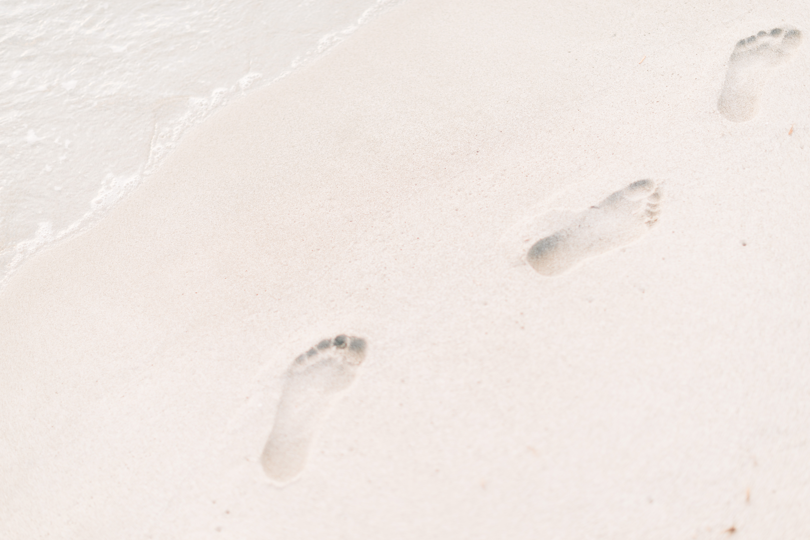

박리나 연구소
발자취
일상
관심사
오늘한줄
박리나의 발자취

1999.03 - 2005.02
서울 은평초등학교
2005.03 - 2008.02
서울 선일여자중학교
2008.03 - 2011.02
서울 선린인터넷 고등학교 정보통신과
2011.03 - 2015.02
서울 세종대학교 컴퓨터공학과
2015.03 - 2015.12
(주)에스엔아이디
2016.01 - 현재
김동환의 아내이자 김성현의 엄마로써 재직 중